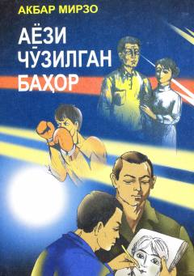

ACToshkentga oʻqishga kelgan yosh yigitning murakkab taqdiri haqidagi taʼsirli qissa.
Ushbu qissada Toshkentga rassomlikka oʻqish uchun kelgan yosh yigit Elyorning taqdiri va u duch kelgan kutilmagan voqealar hikoya qilinadi. Asar inson hayotidagi murakkab sinovlar, sevgi va adolatsizlik mavzularini oʻz ichiga oladi.